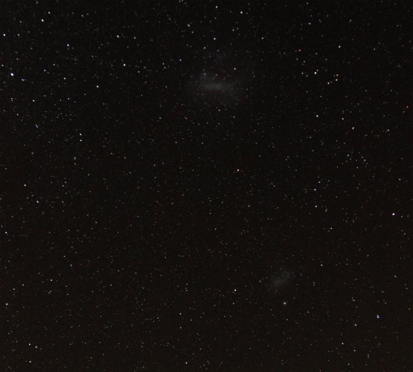

Cerro Pachon at Night
SOAR (SOuthern Astrophysical Research) telescope is a 4.1 meter telescope located on Cerro Pachon, near La Serena, Chile. Because SOAR is in the Southern Hemisphere, they see different stars, or objects like the Large and Small Magellenic Clouds (pictured below).

The image below is a long exposure at night using a 360 degree camera. You can see the Large and Small Magellenic Clouds, as well as the globular cluster 47 Tuc (which is home to a black hole!), and the Pleiades, which is a small cluster of stars that visible by the eye or with a pair of binoculars. SOAR is the nearby dome, and Gemini South is further back. You can also spot the constellation Orion, but if you're from the Northern Hemisphere, it might look a little funny (upside-down) to you!
In this picture, Orion is about to set for the Southern Hemisphere, but it will cross the Equator and rise for the Northern Hemisphere. Betelgeuse (the reddish star) will be the first star to set for the Southern Hemisphere, and the first star to rise for the Northern Hemisphere!
Chile is one of the best spots for astronomy because of how dark the night sky gets. There is a little bit of light pollution in the image from the nearby town of La Serena, but the sky is still dark enough to see the Milky Way really well. The dark patches in the Milky Way are what are known as "dark constellations". They include a llama and her baby, a chilla fox, a snake, a toad and a partridge. How many of them can you spot in the below image?